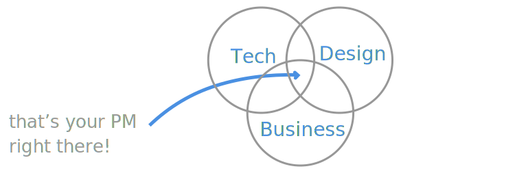
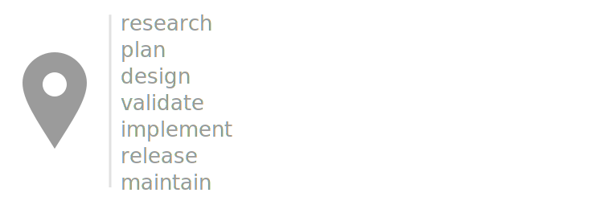

Roles and responsabilities
Product management job decriptions are fuzzy, and the role and responsabilities of a PM is different for every company but I think you can sum up the job description for a PM in a single sentence:
A product manager makes sure the team ships products that people want.
If you’re responsability is to ensure the team and company are shipping products that people want, your responsabilities are necessarily going to be fuzzy, because the responsabilities are going to change as the product and team changes.
Since PMs don’t have authority over the team (unlike the CEO), it means that they need to have a set of skills that allows them to influence others directly or indirectly, to make sure the product moves in the right direction.

Since PMs advocate for users, translate user needs into goals and features, and they also make sure those features ship, it becomes obvious that the PM’s responsabilities span the whole product lifeycle.
Product development lifecycle

- Research - What to build or extend. Input comes from user requests, customer advisory groups, competitive analysis, analysts, new tech, user research, or research from marketing and sales.
- Plan - Create a roadmap, and decide what to ship and when.
- Design - Create a specification of what problems are user pains and use cases are going to be tackled and why. This is also the time to partner with developers and designers to come up with a technical solution to the problem you’re trying to tackle.
- Validate - Run your proposal through prospects, existing customers, sales engineers, and solution architects, to see if your solution will solve their painpoints or if you need to go back to the drawing board. You can leverage the user research team to run some of these sessions, but there’s nothing like having 1st hand feedback, so you should be in the room listening to what users have to say.
- Implement - At this point you have confidence that (1) you really understood the user’s painpoints (2) you have a way to solve them. So this is the time to build features, or change existing ones.
- Release - The product is ready to ship, but there’s a couple of things that need to be coordinated for a successful launch. Make sure your field teams are training because they will be the ones getting the first questions comming hot from existing customers. Make sure your support teams are ready to triage and handle potential issues. Make sure the marketing team has everythinkg they need to communicate to existing customers, and the world at large what’s changing, why, and how do users benefit from it.
- Maintain - Once a feature is out you need to keep an eye on it. In the best case users will adopt the feature so you’ll get more feedback on how to improve it. In the worst case, few users will adopt it, so you’ll have to go back to the drawing board and check if something went wrong in the process of if there’s just isn’t demand for the feature, in which case you should think about killing it.
PM’s are also responsible for organizing alpha and beta programs to make sure you’re (1) shipping something that’s valuable to users (2) that you iron out all the details and bugs.
Here I layed out these product development stages in a linear way, just to make them easier to understand. But if you’re doing them in a linear way, you’re basically doing waterfall and by now we all know that it kind of sucks. While there’s some precedence and dependencies between the activities (it doesn’t make sense to release before implementing, or does it?), you should do these activities in an iterative way.